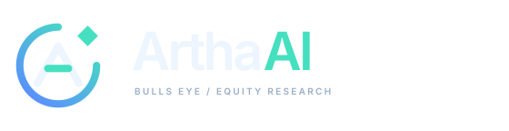

Dark interface
Blue-to-mint orbit, ice-white letter.
An open target for focus. An ascending “A” for ArthaAI. A diamond at the opening for the insight that brings a question into focus.

Download the vector wordmark ↓Transparent SVGs stay crisp at any size. PNGs are available for slides, documents, and social profiles.
Keep clear space around the mark. Use the light version on white, the primary version on navy, and the one-colour version for stamps and watermarks.
The small app icon uses heavier strokes for browser tabs. The master mark has a transparent background and no font dependencies.